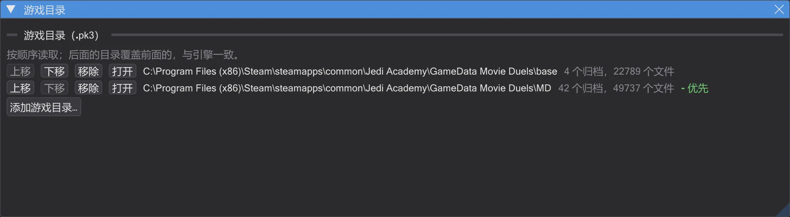
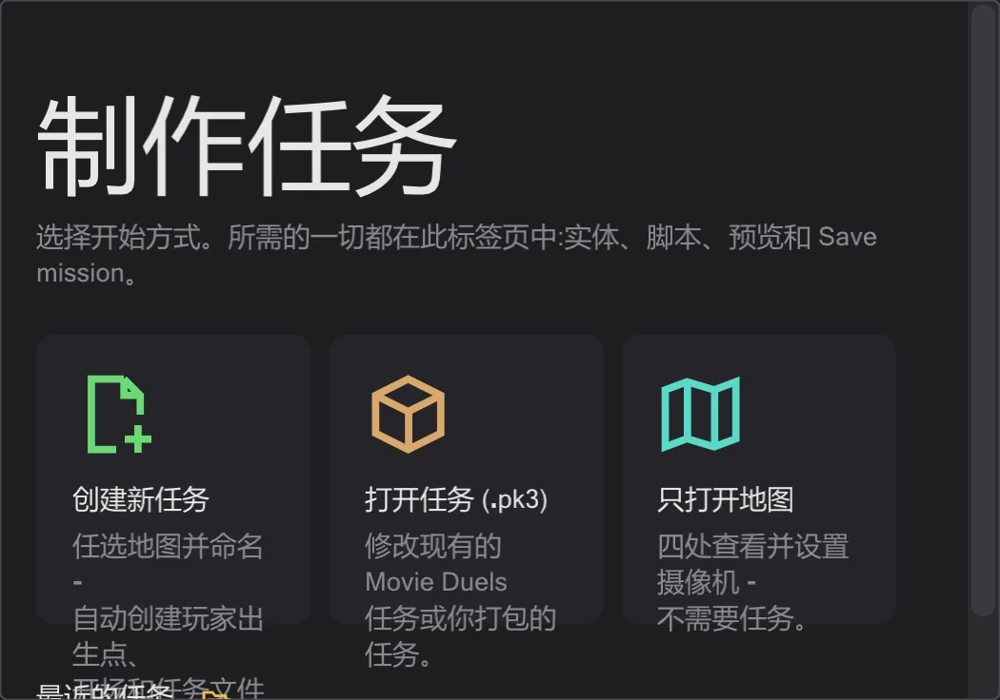

入门
快速上手
解压,告诉程序游戏在哪里,打开一个任务。设置就这么多。
安装#
- 1
从发布页面下载最新的
BehavEd-Remake-….zip,解压到任意文件夹,例如游戏旁边。不会向 Windows 安装任何东西。 - 2
启动
behaved.exe。程序启动时会在 GitHub 上检查新版本并提示你;未经同意不会下载任何内容(开关位于 帮助)。
指定游戏文件夹#
地图、模型、声音和游戏脚本都在游戏的 .pk3 压缩包中。打开 编辑 → 游戏目录,用 添加游戏目录… 添加游戏文件夹:先 base,再添加模组,例如 Movie Duels(MD)。最下面的文件夹优先,正如游戏中 fs_game 覆盖 base。

打开内容#
有多种打开方式。地图页的起始页面(未打开地图时显示)提供:新建任务、从 .pk3 打开任务、只打开地图,以及最近的任务。在菜单中:
- 任务——文件 → 加载任务… 选择一个
.pk3,打开任务及其地图、实体和全部脚本(每个脚本一个标签页)。参见 任务。 - 脚本——文件 → 打开 从磁盘打开
.txt或已编译的.ibi。 - 最近的任务——文件 → 最近的任务 一键重新打开整个任务。

语言#
程序支持英语、德语、中文和日语。启动时使用 Windows 的语言,可在 视图 → 语言 中更改。命令名和值保持游戏中的写法(affect、SET_NAVGOAL),因为文件中就是这样写的。
本手册可通过 帮助 → 手册与教程 打开,也可在 关于 BehavEd 中点击 手册 按钮。它位于
behaved.exe 旁边的 handbuch 文件夹中,无需联网。